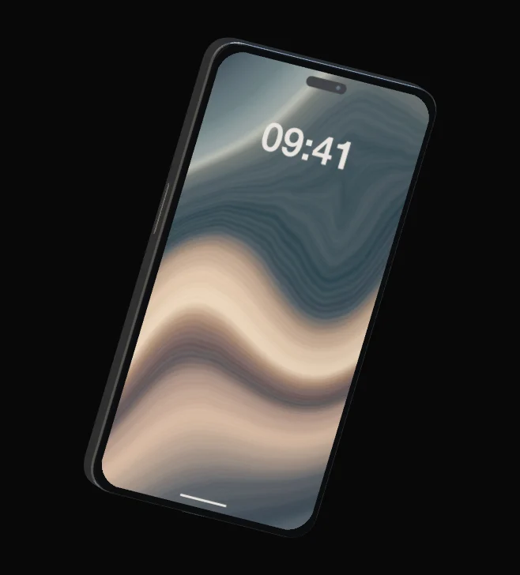

Hardware tour
Inside your phone.

Display
On an OLED screen, each pixel makes its own light. A black pixel can switch off while the white text beside it stays bright.
Why does a moving light leave a trail?
Each pixel collects charge for the whole exposure. If a light moves across the sensor during that interval, several pixels record it. Try doubling the exposure while keeping the speed steady.
The physics
of a tap.
Hold a phone over a payment reader. A changing magnetic field induces a voltage in a loop inside the phone. What happens if you turn that loop edge-on?
Why does the angle matter?
Imagine a frame catching sunlight. Face it toward the light and it catches more. The phone’s coil works much the same way with magnetic flux. At a fixed distance, a 60° tilt halves the induced voltage in this model.
What makes it across?
The reader sends four bits by varying its field strength. Change the gap or tilt and compare the transmitted pattern with the phone’s reconstruction.
Where the loop lives
Separate the layers and find the copper antenna. The loop picks up the field, and the controller on the logic board reads the changing voltage.
Where does an hour of battery life go?
A watt measures how fast a phone uses energy. A watt-hour is the energy it takes to sustain one watt for one hour. Set a battery capacity, then double the load to see how the discharge slope changes.
Beyond the reader
The wireless hop ends at the till. Follow a fictional HK$50 purchase to the issuer, then send the same signed message twice and inspect the second decision.